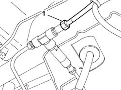
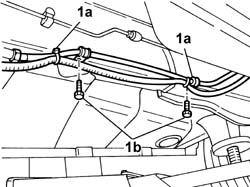
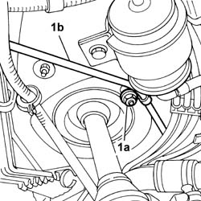
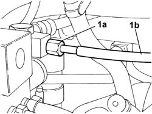

1042B10 CNG SUPPLY LINE FROM SOLENOID TO PRESSURE REDUCTION UNIT - R R
- Path
- Procedures > 10 ENGINE UNIT > 1042 METHANE GAS CANNISTER AND TUBES > 1042B GAS CIRCUIT TUBES AND PIPES > 1042B10 CNG SUPPLY LINE FROM SOLENOID TO PRESSURE REDUCTION UNIT - R R
- Kind
- repair procedure (removal / refitting; the operation number is the code)
- Applies to
- engines: 2.0 16V; all production periods
- Interactive page
- https://sloeber94.github.io/elrnDB-fDct/en/#/244000768
Applies to: engines: 2.0 16V; all production periods
 Removing
Removing
 Refitting
RefittingPosition the vehicle on the lift.
Proceed with draining the high pressure circuit following the instructions in the specific operation:
Op. 1042A02 METHANE SYSTEM SAFETY SET UP
1. Undo the retaining nuts.
2. Remove the fastening studs.
3. Remove vertical guard from its seat.

Applies to: engines: 2.0 16V; all production periods
1. Undo the pipe connector from the three-way connector.

Applies to: engines: 2.0 16V; all production periods
1. Open the bands (1a) and undo the bolts (1b) fixing the fuel pipe retaining bands.

Applies to: engines: 2.0 16V; all production periods
Op. 1048A14 AIR CLEANER FILTERING ELEMENT - REPLACE.
Op. 1048A10 AIR CLEANER FILTERING ELEMENT - REPLACE
1. Undo the nut (1a) fixing the supply pipe to the pressure reduction unit (1b).

Applies to: engines: 2.0 16V; all production periods
1. Undo the connector from the pressure reduction unit (1a) and remove the CNG supply pipe (1b) connecting the canisters and the pressure reduction unit.

Applies to: engines: 2.0 16V; all production periods
Refitting
RemovingFit the CNG supply pipe and tighten the connector to the pressure reduction unit.
Value daNm | Fastening | Component | Ø | |
|---|---|---|---|---|
- | 2.8 | Connector | - | - |
Fasten the pipe near the steering column, tighten the fixing bolt for the band.
Op. 1048A10 AIR CLEANER FILTERING ELEMENT - REPLACE
Op. 1048A14 AIR CLEANER FILTERING ELEMENT - REPLACE.
Fasten the CNG supply pipe and the electrical wiring to the bodyshell using new bands and tightening the bolts fixing the mounting bands.
Tighten the pipe connector to the three-way connector.
Value daNm | Fastening | Component | Ø | |
|---|---|---|---|---|
- | 2.8 | Connector | - | - |
Position the vertical guard and secure it using the special nuts.
Fit the studs to the guard.
Move the CNG cut-off solenoids to open position by hand and check system is efficient.
Remove the vehicle from the lift.